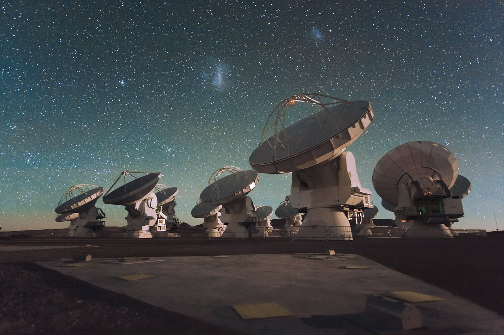

Collecting
faint light.
Complementary telescopes connect the extended reservoir to the compact structures within it.

ALMA
The 12 m C2 and C5 configurations and the ACA 7 m array resolve dense cores while retaining larger filament structure. Band 6 observations combine 1.3 mm continuum with molecular lines including C¹⁸O, CO, H₂CO, ¹³CS, and N₂D⁺; total-power line data recover extended gas.
Image: ESO / C. Malin
Herschel
PACS and SPIRE maps trace the cloud’s thermal dust emission. The far-infrared spectral energy distribution constrains dust temperature and column density, while the 70 μm and 250 μm views connect embedded heating sources to the extended reservoir.
Image: ESA / AOES Medialab · artist’s impression
APEX
ArTéMiS bolometric imaging adds finer detail to the cold-dust structure traced by Herschel. Complementary nFLASH230 spectral-line observations probe molecular gas, linking single-dish measurements of the filament to the interferometric data.
Image: MPIfR
Spitzer
GLIMPSE photometric data distinguish different evolutionary stages of the LANCET filament. IRAC imagery reveals infrared-dark gas, embedded sources, and bright emission around the southern H II regions; the 5.8 μm map also provides context for the ALMA footprints.
Image: NASA / JPL-Caltech / R. Hurt (SSC) · artist’s impression
VISTA
VVV J, H, and Kₛ imagery traces the stellar population and extinction across the filament. Together with GLIMPSE photometry, these data distinguish evolutionary stages from the dark northern cloud to the illuminated southern H II regions.
Image: ESO
ATCA
The CORNISH-South 5.5 GHz continuum map resolves ionized emission at 2.5 arcsec. It constrains free-free emission around the H II regions and its contribution to the millimetre continuum used for core and fragment mass estimates.
Image: CSIRO
MeerKAT
The MeerKAT Galactic Plane Survey maps extended radio emission along the filament. Its multi-frequency continuum data, including the 1.38 GHz view shown on our front page, complement ATCA in modelling the free-free contribution to the total continuum.
Image: SARAOThe invisible, revealed.


Entire filament, fully covered

Recovering the full picture.
Our largely completed continuum workflow combines complementary array configurations and a model of extended emission. Each step below exposes the evidence behind the resulting image.
01 / Pointings and spatial-frequency coverage
ACA 7 m and ALMA 12 m pointing centres, uv coverage, and visibility-amplitude profiles. The TP reference represents the reconstructed continuum model.

02 / Combining arrays and restoring extended emission
From individual arrays to the fully combined continuum: compare compact structure and extended emission across the full filament.


Resolving the gas in velocity.
The ACA setup documented in Paper I combines six narrow windows with two broad windows. The table lists the dedicated targets and selected candidate lines within the broad-window coverage; coverage does not imply detection. Rest frequencies and observing-window centres are shown separately.
| Molecule / transition | Rest frequency (GHz) | Window centre (GHz) | Channel spacing (kHz) | Velocity spacing (km/s) | Nominal resolution¹ (km/s) |
|---|---|---|---|---|---|
| Dedicated narrow windows | |||||
| H₂CO 3₀₃–2₀₂ | 218.222 | 218.248 | 61 | 0.084 | 0.168 |
| H₂CO 3₂₂–2₂₁ | 218.476 | 218.484 | 61 | 0.084 | 0.167 |
| C¹⁸O 2–1 | 219.560 | 219.587 | 61 | 0.083 | 0.167 |
| CO 2–1 | 230.538 | 230.565 | 61 | 0.079 | 0.159 |
| ¹³CS 5–4 | 231.220 | 231.249 | 61 | 0.079 | 0.158 |
| N₂D⁺ 3–2 | 231.322 | 231.350 | 61 | 0.079 | 0.158 |
| Broad window 1 / 215.795–217.670 GHz (1.875 GHz bandwidth) | |||||
| DCO⁺ 3–2 | 216.113 | 216.732 | 488 | 0.677 | 1.354 |
| SiO 5–4 | 217.105 | 216.732 | 488 | 0.674 | 1.348 |
| DCN 3–2 | 217.239 | 216.732 | 488 | 0.673 | 1.347 |
| Broad window 2 / 230.003–231.878 GHz (1.875 GHz bandwidth) | |||||
| CO 2–1 | 230.538 | 230.940 | 488 | 0.635 | 1.269 |
| OCS 19–18 | 231.061 | 230.940 | 488 | 0.633 | 1.266 |
Broad-window ranges are nominal; usable coverage depends on Doppler shifts and edge flagging. CO 2–1 is also covered by a dedicated narrow window with finer spectral sampling.
¹ Velocity spacing is calculated as c Δν/ν using the channel widths reported in Paper I. Nominal resolution assumes Hanning smoothing without channel averaging (twice the channel spacing); the effective resolution of delivered cubes depends on the actual averaging, smoothing, and regridding. Narrow-window sampling is approximately 0.079–0.084 km/s; the 0.79–0.84 km/s conversion printed in Paper I is a decimal-place error.
Line references: molecular-line frequencies, deuterated and sulphur-bearing tracers. See also the ALMA spectral-resolution convention.
Science with a traceable workflow.
The Python package, runnable scripts, and per-task documentation live together in the repository. Data-dependent tasks require their declared local inputs; observational data are not bundled with the code.
python -m pip install -e ".[dev]"
python scripts/prepare_continuum_images.py --stage inspect